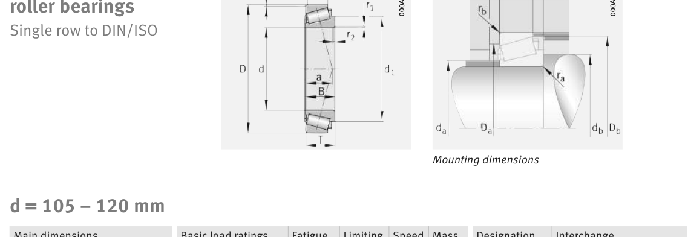

Original catalogue drawing - FAG Schaeffler HR 1, page 604

Scanned from the manufacturer catalogue page listing this part number. All part numbers printed on that table share the same drawing.
Scale cross-section
Blue = inner / outer ring, yellow = rolling element. Drawn to scale from this part's own
dimensions for selection reference only - not a manufacturing or assembly drawing.
Dimension table (mm / inch)
Symbol
Dimension
mm
inch
d
Bore diameter
110
4.3307
D
Outside diameter
180
7.0866
B
Inner-ring / bearing width
56
2.2047
T
Overall assembly width
56
2.2047
C
Cup / outer-ring width
43
1.6929
Notes
Weights are given in kg. Load ratings are shown in both the original catalogue units and the converted value (1 N = 0.2248 lbf). Data is provided for selection reference only - confirm against the latest official catalogue before ordering.
Main dimensions
Bore d (mm)
110
Outside dia. D (mm)
180
Width B (mm)
56
Overall width T (mm)
56
Cup width C (mm)
43
Inner-ring OD d1 (mm)
147.6
Load ratings & speeds
Basic dynamic load rating Cr (lbs)
98916
Basic static load rating Cor (lbs)
141630
Basic dynamic load rating Cr (N)
440000
Basic static load rating C0r (N)
630000
Basic dynamic axial rating Ca (N)
9
Fatigue limit load Cur (N)
95000
Factor e
0.42
Factor Y
1.43
Factor Y0
0.79
Limiting speed nG (rpm)
4,000
Reference speed nB (rpm)
2,460
Effective load centre a (mm)
44
Weight
Weight (kg)
5.64
Mounting dimensions (fillets / shoulders)
Chamfer r2 min (mm)
2.5
Shaft shoulder da (mm)
121
Shaft shoulder db (mm)
120
Housing shoulder Da (mm)
155
Housing shoulder Db (mm)
174
Housing fillet ra max (mm)
2.5
Fillet rb max (mm)
2
Bearing life (ISO 281 basic rating life)
C / P
Equivalent load P (N)
L10 (106 rev)
L10h at 1,300 rpm
4
110,000
102
1,302
6
73,333
392
5,032
8
55,000
1,024
13,128
10
44,000
2,154
27,621
15
29,333
8,323
106,711
Basic rating life per ISO 281: L10 = (C/P)10/3 with C = 440,000 N. Hours = L10 x 106 / (60n). Life-modification factors for lubrication, contamination and temperature (aISO) are not included.
Source & traceability
Brand
FAG
Source catalogue
FAG / Schaeffler Rolling Bearings HR 1
Catalogue page
p.604 (dimensions)
Load ratings in newtons, fatigue limit load Cur, limiting speed nG and reference speed nB.
Send us the quantity you need and we will come back with price and
lead time, normally within 24 hours. Equivalent parts from other brands can be quoted at the same time.